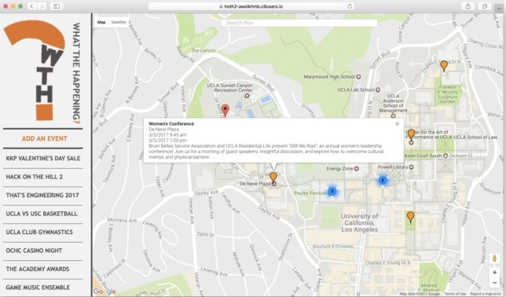

ZipRecruiter, Inc.
In the summer of 2017, I worked as a Software Engineer at
ZipRecruiter.
Notably, I created a web integration linking the company's bug tracking software (FogBugz) to its IT alert system (PagerDuty).
Now, ZipRecruiter employees are instantly notified of critical ticket postings during off-hours.
I also developed a FogBugz
Bip.IO "pod" (standalone service container)
to facilitate interactions with FogBugz's API; thus strengthening ZipRecruiter's presence as a contributor to the Open Source Initiative.
Perl Tutorials
ZipRecruiter uses Perl as its primary back-end programming language. All engineers are given two books for training:
Beginning Perl by Simon Cozens and
Modern Perl by Chromatic.
It took just under a month to get through them. I just needed to know syntax and features unique to the language;
so I felt that the training process could have been much quicker.
Therefore, I've condensed both books into a comprehensive tutorial for learning the core Perl language.
My aspiration is that anyone who has prior programming experience in a lower-level language will be able to learn Perl as efficiently as possible with this guide.
If you're completely new to programming, I advise that you read one of the two books listed above instead.
Here's part one of the tutorial.
Personal Projects
Whenever I can, I make my UCLA Computer Science classwork publicly available on my
GitHub page.
Hackathons

My web application,
What the Happening, won second place overall at the UCLA's Hack on the Hill 2017.
It functions to display live maps of college campuses, detailing the times and locations of any special events, lectures, or sporting events.
Research
I created a
Propositional Logic Formula Evaluator in C++ as teaching tool for
Discrete Structures students at Sonoma State University. From the input of a premise and a conclusion, the program will build a truth table and determine whether the corresponding
Boolean logic formula is a tautology.